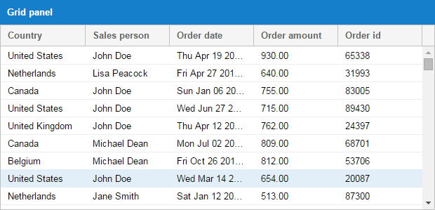
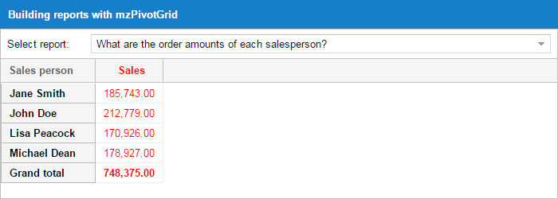
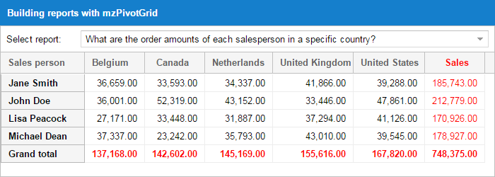
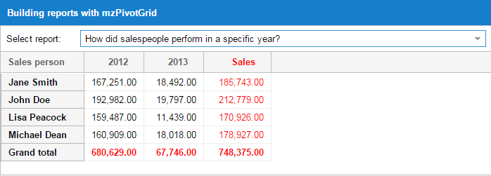
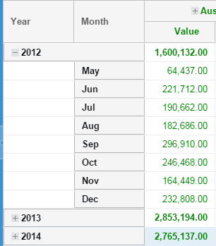
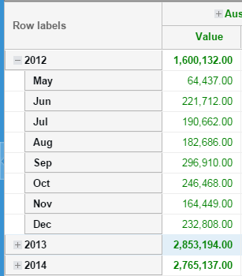
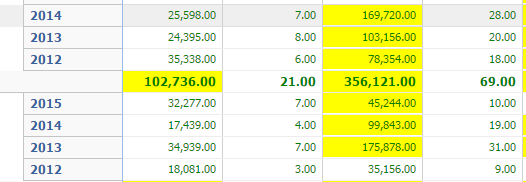
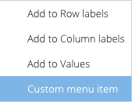

Pivot Grid
Many classes have shortcut names used when creating (instantiating) a class with a
configuration object. The shortcut name is referred to as an alias (or xtype if the
class extends Ext.Component). The alias/xtype is listed next to the class name of
applicable classes for quick reference.
Framework classes or their members may be specified as private or protected. Else,
the class / member is public. Public, protected, and private are access
descriptors used to convey how and when the class or class member should be used.
Public classes and class members are available for use by any other class or application code and may be relied upon as a stable and persistent within major product versions. Public classes and members may safely be extended via a subclass.
Protected class members are stable public members intended to be used by the
owning class or its subclasses. Protected members may safely be extended via a subclass.
Private classes and class members are used internally by the framework and are not intended to be used by application developers. Private classes and members may change or be omitted from the framework at any time without notice and should not be relied upon in application logic.
static label next to the
method name. *See Static below.Below is an example class member that we can disect to show the syntax of a class member (the lookupComponent method as viewed from the Ext.button.Button class in this case).
Let's look at each part of the member row:
lookupComponent in this example)( item ) in this example)Ext.Component in this case). This may be omitted for methods that do not
return anything other than undefined or may display as multiple possible values
separated by a forward slash / signifying that what is returned may depend on the
results of the method call (i.e. a method may return a Component if a get method calls is
successful or false if unsuccessful which would be displayed as
Ext.Component/Boolean).PROTECTED in
this example - see the Flags section below)Ext.container.Container in this example). The source
class will be displayed as a blue link if the member originates from the current class
and gray if it is inherited from an ancestor or mixed-in class.view source in the example)item : Object in the example).undefined a "Returns" section
will note the type of class or object returned and a description (Ext.Component in the
example)Available since 3.4.0 - not pictured in
the example) just after the member descriptionDefaults to: false)The API documentation uses a number of flags to further commnicate the class member's function and intent. The label may be represented by a text label, an abbreviation, or an icon.
classInstance.method1().method2().etc();false is returned from
an event handler- Indicates a framework class
- A singleton framework class. *See the singleton flag for more information
- A component-type framework class (any class within the Ext JS framework that extends Ext.Component)
- Indicates that the class, member, or guide is new in the currently viewed version
- Indicates a class member of type config
- Indicates a class member of type property
- Indicates a class member of type
method
- Indicates a class member of type event
- Indicates a class member of type
theme variable
- Indicates a class member of type
theme mixin
- Indicates that the class, member, or guide is new in the currently viewed version
Just below the class name on an API doc page is a row of buttons corresponding to the types of members owned by the current class. Each button shows a count of members by type (this count is updated as filters are applied). Clicking the button will navigate you to that member section. Hovering over the member-type button will reveal a popup menu of all members of that type for quick navigation.
Getting and setter methods that correlate to a class config option will show up in the methods section as well as in the configs section of both the API doc and the member-type menus just beneath the config they work with. The getter and setter method documentation will be found in the config row for easy reference.
Your page history is kept in localstorage and displayed (using the available real estate) just below the top title bar. By default, the only search results shown are the pages matching the product / version you're currently viewing. You can expand what is displayed by clicking on the button on the right-hand side of the history bar and choosing the "All" radio option. This will show all recent pages in the history bar for all products / versions.
Within the history config menu you will also see a listing of your recent page visits. The results are filtered by the "Current Product / Version" and "All" radio options. Clicking on the button will clear the history bar as well as the history kept in local storage.
If "All" is selected in the history config menu the checkbox option for "Show product details in the history bar" will be enabled. When checked, the product/version for each historic page will show alongside the page name in the history bar. Hovering the cursor over the page names in the history bar will also show the product/version as a tooltip.
Both API docs and guides can be searched for using the search field at the top of the page.
On API doc pages there is also a filter input field that filters the member rows using the filter string. In addition to filtering by string you can filter the class members by access level and inheritance. This is done using the checkboxes at the top of the page.
The checkbox at the bottom of the API class navigation tree filters the class list to include or exclude private classes.
Clicking on an empty search field will show your last 10 searches for quick navigation.
Each API doc page (with the exception of Javascript primitives pages) has a menu view of metadata relating to that class. This metadata view will have one or more of the following:
Ext.button.Button class has an alternate class name of Ext.Button). Alternate class
names are commonly maintained for backward compatibility.Runnable examples (Fiddles) are expanded on a page by default. You can collapse and expand example code blocks individually using the arrow on the top-left of the code block. You can also toggle the collapse state of all examples using the toggle button on the top-right of the page. The toggle-all state will be remembered between page loads.
Class members are collapsed on a page by default. You can expand and collapse members using the arrow icon on the left of the member row or globally using the expand / collapse all toggle button top-right.
Viewing the docs on narrower screens or browsers will result in a view optimized for a smaller form factor. The primary differences between the desktop and "mobile" view are:
The class source can be viewed by clicking on the class name at the top of an API doc page. The source for class members can be viewed by clicking on the "view source" link on the right-hand side of the member row.

The Pivot Grid component enables rapid summarization of large sets of data. It provides a simple way to condense many data points into a format that makes trends and insights more apparent. A classic example is sales data. A company will often have a record of all sales it makes for a given period. This will often encompass thousands of rows of data. The Pivot Grid allows you to see how well each salesperson performed, which cities generate the most revenue, how products perform between cities, etc.
Note: This guide covers the pivot package bundled in the Premium version of the Ext JS 6.2 SDK.
Imagine you had the following grid panel:

How could you easily implement a client-side solution that answered the following questions?
What is John Doe's total order amount?
What are the total order amounts by country?
How did a salespeople perform in a specific year?
These are the sorts of challenges that the Pivot Grid solves. Let's take a look at how the answers may be visualized.


The Pivot Grid is not bundled within the Ext JS framework, but is easy to require into your application. Whether you're working with an application generated by Sencha Cmd or with an application structure of your own design, including the Pivot Grid code and styling only requires a couple of steps.
Sencha Pivot Grid works with both classic and modern toolkits of Sencha Ext JS 6.2.
Sencha Cmd is not required to utilize the Pivot Grid. However, using Cmd allows you to
seamlessly include the Pivot Grid package via your application's app.json file.
The Pivot Grid is delivered with full source code that is packaged in a way that makes it easy to deploy to your application's packages folder.
To include the Pivot Grid in an application then simply modify
your app.json file in your application root directory to require the Pivot Grid package:
{
"name": "YourApp",
"requires": [
"pivot"
],
"id": "391a5ff6-2fd8-4e10-84d3-9114e1980e2d"
}
The package supports both classic and modern toolkits so there's no need for toolkit dependent configs.
The SDK contains a compiled version of the Pivot Grid's code that is available for those not using Sencha Cmd. To include the Pivot Grid in this manner, link the following assets from your index page:
{unzippedFolder}/packages/pivot/build/{toolkit}/pivot.js
{unzippedFolder}/packages/pivot/build/{toolkit}/{themeName}/resources/pivot-all.css
Include the following in your application directory:
{unzippedFolder}/packages/pivot/build/{toolkit}/{themeName}/resources/images/
The Pivot Grid relies on two pieces that extend the native grid panel - Axis and Aggregation. Axis allows you to determine row and column placement while aggregation manages the grouping calculations. These pieces need to be defined on the pivot matrix object used by the Pivot Grid.
Let's delve into the Pivot Grid by imagining the use case we discussed above. First, we'll break the dataset into salespeople and years. We can do this by configuring the top and left axis:
{
xtype: 'pivotgrid',
matrix: {
leftAxis: [{
width: 80,
dataIndex: 'salesperson',
header: 'Salesperson'
}],
topAxis: [{
dataIndex: 'year',
header: 'Year',
direction: 'ASC'
}]
// ... more configs
}
}
This results in a view like this:

Next, we'll set up the aggregation so the cell values can be appropriately calculated.
The Pivot Grid includes many aggregation methods out of the box.
sum
average
min
max
count
groupSumPercentage - If John sold items in the US and Germany you may want to see what percentage was sold to US from the total sales. The groupSumPercentage method calculates the percentage of the current item sum out of the parent item sum.
groupCountPercentage - This is the same as groupSumPercentage, but uses count instead of sum.
variance
varianceP
stdDev
stdDevP
You may also provide your own aggregation function for customized processing. The following example demonstrates how to aggregate multiple fields (sales and quantity) by configuring each aggregator in the aggregate array. As you can see, we're using a custom aggregator for Quantity.
{
xtype: 'pivotgrid',
matrix: {
aggregate: [{
measure: 'amount',
header: 'Sales',
aggregator: 'sum',
align: 'right',
width: 85,
renderer: Ext.util.Format.numberRenderer('0,000.00')
}, {
measure: 'orderid',
header: 'Qnt',
aggregator: function(records, measure, matrix, rowGroupKey, colGroupKey) {
// custom aggregator logic
return records.length;
},
align: 'right',
width: 85,
renderer: Ext.util.Format.numberRenderer('0,000.00')
}]
// ... more configs
}
}
The above is a simple example to show what's possible. If you are writing your own aggregation methods, it's best to override Ext.pivot.Aggregators. In the override you can add your functions and use the function name as the aggregator config name.
Ext.define('Overrides.pivot.Aggregators', {
override: 'Ext.pivot.Aggregators',
myOwnFnText: 'My special fn', // useful when using the Configurator plugin
myOwnFn: function(records) {
// custom aggregator logic
return records.length;
}
});
// Then you can define your aggregate config in this manner
aggregate: [{
// ...
dataIndex: 'field',
aggregator: 'myOwnFn'
// ...
}]
It is also possible to define the aggregate function in a ViewController.
Ext.define('App.view.Pivot', {
extend: 'Ext.pivot.Grid',
controller: 'pivot',
matrix: {
aggregate: [{
// ...
dataIndex: 'field',
aggregator: 'myOwnFn'
// ...
}]
// ...
}
});
Ext.define('App.view.PivotController', {
extend: 'Ext.app.ViewController',
alias: 'controller.pivot',
myOwnFn: function(records, measure, matrix, rowGroupKey, colGroupKey){
// custom aggregate function
return records.length;
}
});
When defining a dimension, you can set the following configs to affect sorting results.
sortable: True to sort the results (default is true).
direction: You may specify whether you want the results to be sorted (ascending) ASC or (descending) DESC (default is ASC).
caseSensitiveSort: Configure as true to make the filtering match with exact case matching (default is true).
sorterFn: Custom sorter function.
sortIndex: You may want to sort your results using the value of another field on the record. Let's say you have one field "month-name" with values like Jan, Feb, etc. and another field "month-value" with values like 1, 2, etc. It makes sense to have the results from "month-name" (dataIndex) and sort by "month-value" (sortIndex).
By default, the Pivot Grid calculates grand totals on rows. You may choose whether or not to display the grand total. Adding multiple grand totals on rows is possible in two ways:
You can listen to the pivotbuildtotals event, which is fired by the Pivot Grid. The
event handler is passed as a parameter, which contains an array of grand total values
and the default value. Each object in that array should have a "title" and a "values"
array that will be used to generate the totals record.
You can extend one of the matrix classes and use the template method onBuildTotals
to perform the same logic as above.
The new grand totals that you provide will be styled as the default grand total in the Pivot Grid.
// ...
listeners: {
pivotbuildtotals: function(matrix, totals) {
var dataAvg = {},
dataMax = {};
Ext.Array.each(matrix.model, function(field) {
var result,
agg;
if (field.col && field.agg) {
agg = matrix.aggregate.getByKey(field.agg);
result = matrix.results.get(matrix.grandTotalKey, field.col);
if (result && agg) {
dataAvg[field.name] = result.calculateByFn(
'totalavg',
agg.dataIndex,
Ext.pivot.Aggregators.avg);
dataMax[field.name] = result.calculateByFn(
'totalmax',
agg.dataIndex,
Ext.pivot.Aggregators.max);
}
}
});
totals.push({
title: 'Grand total (avg)',
values: dataAvg
}, {
title: 'Grand total (max)',
values: dataMax
});
}
}
// ...
Let's say that you have results for years on one axis and you want to group them as 80', 90', and so on. You can achieve this in two ways:
You can define a "grouperFn" on the dimension that will will be passed the record and should return the group value (i.e. 80', 90' etc).
You can define a new field on the source model that has a "convert" function and does the same thing as above.
grouperFn example:
leftAxis: [{
// ...
grouperFn: function(record) {
var dataIndex = this.dataIndex,
recIndex = record.get(dataIndex);
if (recIndex >= 1980 && recIndex < 1990) return "80'";
if (recIndex >= 1990 && recIndex < 2000) return "90'";
return 'Rest';
}
// ...
}]
The Pivot Grid provides two types of filters:
The label filter allows you to filter results by evaluating the values generated for top or left axis results (i.e. begins with, does not begin with, ends with, etc.).
The value filter allows you to filter results by evaluating the values calculated for each top/left axis pair (i.e. equals to, greater than, top 10 items, top 10 percent, top 10 sum, etc.).
The filter is configured on a dimension item of the left or top axis.
aggregate: [{
id: 'agg1',
dataIndex: 'value',
aggregator: 'sum',
header: 'Total'
}],
leftAxis: [{
// ...
filter: {
type: 'value',
operator: 'top10',
topOrder: 'top',
topType: 'sum',
value: 9500,
dimensionId: 'agg1'
}
// ...
}]
For more information check out the filter classes (Ext.pivot.filter.*).
There may be thousands of records in the Pivot store once the Pivot Grid's calculations have completed. To prevent the DOM from being overwhelmed, you may want to use the BufferedRenderer plugin. BufferedRenderer has been available since version Ext JS 4.2.0. In version 5+ BufferedRendering is used on the grid panel by default.
The BufferedRenderer allows users to scroll through thousand of records without the performance penalties of rendering all of the records on screen at once.
Pivot Grid provides two layout types with the viewLayoutType config: outline and
compact.

{
xtype: 'pivotgrid',
matrix: {
viewLayoutType: 'outline'
// ... more configs
}
}

{
xtype: 'pivotgrid',
matrix: {
viewLayoutType: 'compact',
compactViewColumnWidth: 250,
textRowLabels: 'Row labels'
// ... more configs
}
}
The position of the grand totals can be configured for both the left and top axis. The
total can be set as first, last, or none.
The group totals will always be visible when the group is collapsed. This occurs regardless of what is configured for the totals when you have multiple dimensions configured on one axis. The same configuration will also be used when the group is expanded.
{
xtype: 'pivotgrid',
matrix: {
rowSubTotalsPosition: 'first',
rowGrandTotalsPosition: 'last',
colSubTotalsPosition: 'last',
colGrandTotalsPosition: 'last'
// ... more configs
}
}
Renderers can be used to format labels for axis results. For example:
{
xtype: 'pivotgrid',
matrix: {
topAxis: {
dataIndex: 'month',
labelRenderer: function(value){
return Ext.Date.monthNames[value];
}
}
// ... more configs
}
}
Can also be used to format the output value on the aggregate dimensions:
{
xtype: 'pivotgrid',
matrix: {
aggregate: [{
dataIndex: 'amount',
aggregator: 'sum',
formatter: 'number("0,000.00")'
}, {
dataIndex: 'qty',
aggregator: 'sum',
renderer: Ext.util.Format.numberRenderer('0,000.00')
}]
// ... more configs
}
}
A ViewController could also be used to define renderers.
Ext.define('App.view.Pivot', {
extend: 'Ext.pivot.Grid',
controller: 'pivot',
matrix: {
topAxis: {
// ...
dataIndex: 'month',
labelRenderer: 'monthRenderer'
// ...
},
aggregate: [{
// ...
dataIndex: 'field',
renderer: 'myOwnFn'
// ...
}]
// ...
}
});
Ext.define('App.view.PivotController', {
extend: 'Ext.app.ViewController',
alias: 'controller.pivot',
monthRenderer: function(value){
return Ext.Date.monthNames[value];
},
myOwnFn: function(value, meta, record){
// custom renderer function
return value;
}
});
Styling the Pivot Grid depends on the toolkit used.
The aggregate dimension renderer can be used to style the cell and to format the output value:
{
xtype: 'pivotgrid',
matrix: {
aggregate: {
dataIndex: 'amount',
aggregator: 'sum',
renderer: function(value, meta, record) {
if (value > 40000) {
meta.style = "background-color: yellow;";
}
return Ext.util.Format.number(value, '0,000.00');
}
}
// ... more configs
}
}
Using the above renderer, the resulting grid output would appear as:

The renderer config can be used on left axis dimensions as well to style cells.
You can also define more complex logic in the renderer function. For instance, the below renderer styles the cell differently when the sum is lower than the average of some other field on the model.
{
xtype: 'pivotgrid',
matrix: {
aggregate: {
dataIndex: 'amount',
aggregator: 'sum',
renderer: function(value, meta, record, recordIndex, columnIndex, store, view) {
var grid = view.up('pivotgrid'),
topItem = grid.getTopAxisItem(meta.column),
leftItem = grid.getLeftAxisItem(record),
result;
if (topItem && leftItem) {
result = grid.getMatrix().results.get(leftItem.key, topItem.key);
// if you already have the avg configured on another
// dimension just fetch the result
// result.getValue('avg')
// otherwise calculate the result
result.calculateByFn('avg', 'some-other-field', Ext.pivot.Aggregators.avg);
if (value < result.getValue('avg')) {
meta.style = "background-color: yellow;";
}
}
return Ext.util.Format.number(value, '0,000.00');
}
}
// ... more configs
}
}
Let's have a look at this example:
{
xtype: 'pivotgrid',
itemConfig: {
viewModel: {
type: 'pivot-row-model'
},
bind: {
userCls: '{rowStyle}'
// or you can define a template
//userCls: '{record.isRowGroupHeader:pick("","pivotRowHeader")}'
}
}
// ... more configs
}
In the ViewModel we would declare a formula that will use the record data. The record has all values that are displayed for that row and the following additional fields:
All these properties can help us style the entire row without knowing anything about the generated columns.
In some case we may want to style positive and negative values generated in the pivot grid. This can be done as following.
{
xtype: 'pivotgrid',
itemConfig: {
viewModel: {
type: 'default'
}
},
topAxisCellConfig: {
bind: {
userCls: '{value:sign("pivotCellNegative","pivotCellPositive")}'
}
}
// ... more configs
}
The following data is available for use in the bind template:
Note: In such cases you cannot use formulas because the column and value are generated dynamically and can't be replaced in formulas.
It is also possible to style a specific dimension from left axis or aggregate:
{
xtype: 'pivotgrid',
itemConfig: {
viewModel: {
type: 'default'
}
},
matrix: {
aggregate: [{
dataIndex: 'value',
aggregator: 'sum',
align: 'right',
cellConfig: {
bind: {
userCls: '{value:sign("pivotCellNegative","pivotCellPositive")}'
}
}
},{
dataIndex: 'value',
aggregator: 'count'
}],
leftAxis: [{
dataIndex: 'person',
// This is used only when `viewLayoutType` is `outline`
cellConfig: {
bind: {
userCls: '{record.isRowGroupHeader::pick("","pivotRowHeader")}'
}
}
},{
dataIndex: 'country'
}]
// ... more configs
}
}
This scenario allows you to define formulas to use in cell binding. Be careful that this means that each cell will have an own ViewModel and this may decrease the pivot grid performance. Use it only if necessary.
{
xtype: 'pivotgrid',
leftAxisCellConfig: {
viewModel: {
type: 'default'
},
bind: {
userCls: '{record.isRowGroupHeader::pick("","pivotRowHeader")}'
}
},
topAxisCellConfig: {
viewModel: {
type: 'pivot-cell-model' // to be able to define your own formulas
},
bind: {
userCls: '{value:sign("pivotCellNegative","pivotCellPositive")}'
//userCls: '{column.isColGrandTotal:pick(null,"pivotCellGrandTotal")}'
//userCls: '{cellCls}
}
}
// ... more configs
}
This approach lets you use record, column and value in both bind templates and formulas.
If multiple aggregate dimensions are available and you want to style one of them you can define the binding on that dimension like this:
{
xtype: 'pivotgrid',
matrix: {
aggregate: [{
dataIndex: 'value',
aggregator: 'sum',
align: 'right',
cellConfig: {
viewModel: {
type: 'pivot-cell-model'
},
bind: {
userCls: '{value:sign("pivotCellNegative","pivotCellPositive")}'
//userCls: '{column.isColGrandTotal:pick(null,"pivotCellGrandTotal")}'
//userCls: '{cellCls}
}
}
},{
dataIndex: 'value',
aggregator: 'count'
}]
// ... more configs
}
}
Pivot Grids may be configured as stateful by using stateful: true along with a
stateId. The state will save all dimension configs that you provided for the left,
top, and aggregate. It will additionally recall the state of expanded or collapsed
groups.
Note: This feature is only available in the classic toolkit.
You can "lock" left axis columns by setting enableLocking: true on the Pivot Grid.
This allows you scroll just the top axis generated columns.
Note: This feature is only available in the classic toolkit.
This plugin allows users to edit Pivot Grid cells. It uses updaters to process the records behind a Pivot Grid cell.
{
xtype: 'pivotgrid',
plugins: [{
ptype: 'pivotcellediting',
clicksToEdit: 1,
defaultUpdater: 'uniform' // define here the type of editing: 'overwrite', 'increment', 'percentage', 'uniform'
}]
// ... more configs
}
More updaters could be defined. For more information check out the updater classes (Ext.pivot.update.*).
The plugin also provides two events fired on the Pivot Grid that you can use to pre / post process the
edit: pivotbeforeupdate and pivotupdate.
Note: This feature is only available in the classic toolkit.
This plugin allows users to edit Pivot Grid results. Users can double click a Pivot Grid cell which opens a window that contains various fields to update. The following types of edits are available:
percentage: The provided value is a percentage that should be used to increase the values on all records behind that cell.
increment: The provided value will be added to the existing value on each record.
overwrite: The provided value will replace the existing value on each record.
uniform: The provided value will be distributed uniformly on all records.
The plugin also provides two events fired on the Pivot Grid that you can use to pre / post process the
edit: pivotbeforeupdate and pivotupdate.
The drill down plugin allows the user to drill down into Pivot Grid results. Users can double click a Pivot Grid cell which opens a dialog window housing a grid containing records sourced by the cell.
The grid presented in that drill down window may be customized by configuring the
columns config on the plugin in the same way as a normal Ext JS grid.
When using remote calculations in the Pivot Grid the remoteStore config needs to be provided which will
be filtered by the plugin.
The Exporter plugin allows Pivot Grid results export to any Exporter type available in
the class system. The plugin uses the exporter package which comes out of the box with the
following exporters:
excel Excel 2007 xlsx format
xml Excel 2003 xml format
csv CSV file
tsv TSV file
html Html file
The plugin adds two new methods to the Pivot Grid component:
saveDocumentAs: This function will save the exported file
getDocumentData: Returns the export document content
Both functions accept a config object as parameter:
type: This is the exporter type (_defaults to excel).
onlyExpandedNodes: Set to true to export only the expanded groups (defaults to false).
showSummary: Set to false to exclude the totals from the export (defaults to true).
title: Set a title to be shown above column headers in the exported document.
fileName: Name of the saved file.
Each Exporter may come with its own set of additional configs. Those can be provided to the above config object when one of those functions is called.
saveDocumentAs tries to save the document using browser specific features. If the browser has no features to save files then the content of the generated file is sent to a server script and the server responds back with the proper headers for a downloadable file.
The URL for the server script can be customized in Ext.exporter.File#property-url and the
server script could be hosted in-house. Implementations for Node and PHP can be found
in the server folder in the root of the exporter package.
The configurator plugin allows the user to easily configure a Pivot Grid with drag and drop functionality.
The most important config of this plugin is fields. This must be an array of fields that
can be used via DND to configure the Pivot Grid. The plugin will automatically extract all
fields from the store model when using a Local matrix if the fields config is empty.
Each field has a settings config
that provides some restrictions for field usage. The following configs can be defined in settings:
cls: CSS class to add to this configurator field
style: Similar to Ext.Component#cfg-style.
fixed: If you want a field to be fixed in a specific area then you must define those areas here.
Possible values: aggregate, leftAxis, topAxis.
allowed: Define here the areas where this field can be used. Possible values: aggregate, leftAxis, topAxis.
aggregators: Define here the functions that can be used when the field is configured as an aggregate.
renderers: These renderers are used only on the aggregate dimensions.
formatters: Formatters are used only on the aggregate dimensions.
Example:
Ext.define('App.view.Pivot', {
extend: 'Ext.pivot.Grid',
controller: 'pivot',
plugins: {
ptype: 'pivotconfigurator', // use `type` for modern toolkit
fields: [{
dataIndex: 'quantity',
header: 'Qty',
// You can even provide a default aggregator function to be used when this field is dropped
// on the agg dimensions
aggregator: 'min',
formatter: 'number("0")',
settings: {
// Define here in which areas this field could be used
allowed: ['aggregate'],
// Set a custom style for this field to inform the user that it can be dragged only to "Values"
style: {
fontWeight: 'bold'
},
// Define here custom formatters that ca be used on this dimension
formatters: {
'0': 'number("0")',
'0%': 'number("0%")'
}
}
}, {
dataIndex: 'amount',
header: 'Value',
settings: {
// Define here in which areas this field could be used
allowed: 'aggregate',
// Define here what aggregator functions can be used when this field is
// used as an aggregate dimension
aggregators: ['sum', 'avg', 'count'],
// Set a custom style for this field to inform the user that it can be dragged only to "Values"
style: {
fontWeight: 'bold'
},
// Define here custom renderers that can be used on this dimension
renderers: {
'Colored 0,000.00': 'coloredRenderer' // coloredRenderer is a function on the ViewController
},
// Define here custom formatters that ca be used on this dimension
formatters: {
'0': 'number("0")',
'0.00': 'number("0.00")',
'0,000.00': 'number("0,000.00")',
'0%': 'number("0%")',
'0.00%': 'number("0.00%")'
}
}
}, {
dataIndex: 'year',
header: 'Year',
settings: {
// Define here the areas in which this field is fixed and cannot be moved from
fixed: ['topAxis']
}
}, {
dataIndex: 'month',
header: 'Month',
labelRenderer: 'monthLabelRenderer', // monthLabelRenderer is a function available on the ViewController
settings: {
// Define here what aggregator functions can be used when this field is
// used as an aggregate dimension
aggregators: ['count'],
// Define here in which areas this field could be used
allowed: ['leftAxis', 'topAxis']
}
}]
}
});
Ext.define('App.view.PivotController', {
extend: 'Ext.app.ViewController',
alias: 'controller.pivot',
monthLabelRenderer: function(value){
return Ext.Date.monthNames[value];
},
// implementation for classic toolkit
//coloredRenderer: function(v, meta){
// if(meta) {
// meta.style = Ext.String.format('color: {0};', v > 500 ? 'green' : 'red');
// }
// return Ext.util.Format.number(v, '0,000.00');
//}
// implementation for modern toolkit
coloredRenderer: function(v, record, dataIndex, cell, column){
cell.setStyle( Ext.String.format('color: {0};', v > 500 ? 'green' : 'red') );
return Ext.util.Format.number(v, '0,000.00');
}
});
The Configurator plugin fires events on the Pivot Grid which allow you to further customize
the user interaction. In the classic toolkit implementation one such event is beforeshowconfigfieldmenu
which allows you to define more menus in the configurator field menu.

Ext.define('App.view.Pivot', {
extend: 'Ext.pivot.Grid',
controller: 'pivot',
plugins: 'pivotconfigurator',
matrix: {
// ...
},
listeners: {
beforeshowconfigfieldmenu: 'getCustomMenus'
}
});
Ext.define('App.view.PivotController', {
extend: 'Ext.app.ViewController',
alias: 'controller.pivot',
getCustomMenus: function (panel, options) {
options.menu.add({
text: 'Custom menu item',
handler: function(){
Ext.Msg.alert('Custom menu item', Ext.String.format('Do something for "{0}"', options.field.getHeader()));
}
});
}
});
Most events fired by matrix classes are relayed to the Pivot Grid along with a pivot
prefix.
The Base matrix class builds the top and left axis items. It also calculates the result for each left / top item pair.
Setting your matrix type to local indicates that the browser will be responsible for
calculating data. The Local matrix is ideal for small to medium-sized data sets.
{
xtype: 'pivotgrid',
// ...
matrix: {
type: 'local', // default value
store: 'YourStore',
recordsPerJob: 1000,
timeBetweenJobs: 2,
leftAxis: [],
topAxis: [],
aggregate: []
}
// ...
}
The Local matrix processes store records in multiple jobs to help prevent overloading the browser when working with medium-sized data sets. You can optionally configure how many records should be processed per job and how long to wait between jobs.
Calculating large data sets in the browser can take a lot of time and may cause the browser to become unresponsive. If you are working with large data sets, you should use the Remote matrix. The Remote matrix will serialize all of your configs and send them to the server so that you may perform your calculations remotely.
{
xtype: 'pivotgrid',
// ...
matrix: {
type: 'remote',
url: 'http://your-backend-url',
timeout: 3000, // optional config used by the Ajax call
leftAxis: [],
topAxis: [],
aggregate: []
}
// ...
}
The leftAxis, topAxis, and aggregate are arrays of dimension item objects. These arrays are serialized and sent as params in the Ajax request.
params = {
leftAxis: leftAxis,
topAxis: topAxis,
aggregate: aggregate,
grandTotalKey: 'grandtotal', // the value configured for grandTotalKey on the matrix
keysSeparator: '#_#' // the value configured for keysSeparator on the matrix
};
// ...
Ext.Ajax.request({
// ...
url: me.url,
timeout: me.timeout,
jsonData: params,
// ...
});
Before doing the Ajax call, additional params are collected via the beforerequest
event (which is actually relayed to the Pivot Grid as pivotbeforerequest) or via the
template method onBeforeRequest.
The Pivot Grid expects a JSON response in a specific format. The response should return an array of items for the leftAxis and topAxis and all results for the left / top item pairs.
Note: The "id" property is very important. An id will be generated if not specified.
{
success: true,
leftAxis: [{
key: '-1276511163', // provide your own key but be careful to avoid conflicts with keysSeparator
value: 'Macromedia',
// following is the id of the dimension, the one that you
// provided or was generated
dimensionId: 'leftAxis1'
}, {
// when multiple dimensions are provided then the result key
// should be formatted like this
key: '-1276511163#_#243243', // use the keysSeparator that was sent to the server
value: 'Steve',
// following is the id of the dimension, the one that you
// provided or was generated
dimensionId: 'leftAxis2'
}],
topAxis: [{
// same like leftAxis
}],
results: [{
leftKey: '-1276511163',
topKey: '34535345435',
values: {
agg1: 4345.34, // agg1 is the id of the aggregate dimension
agg2: 244 // agg2 is the id of the 2nd aggregate dimension defined
}
}]
}
A key called "grandtotal" is generated for the matrix in regards to grand total calculations.
You can modify this naming scheme by changing the value of matrix.grandTotalKey.
If used on both leftKey and topKey, it represents the grand total for both axis.
If used for leftKey, it represents the grand total for columns for each topKey
provided.
If used for topKey, it represents the grand total for rows for each leftKey provided.
The server folder in the pivot package contains a PHP example that shows one approach to server side
calculations. That said, you can also author your own implementation in any server-side
language as long as it returns the JSON object described above.
If server calculations fail, you can send back success: false along with any
additional metadata information you may wish to process in the Pivot client. The Remote
matrix class will recognize that the call failed and will fire the "requestexception"
event, which is relayed to the Pivot Grid as "pivotrequestexception".
The Sencha Pivot Grid provides an ideal solution for gleaning summarization from large datasets. Specific fields from the dataset can be highlighted as quantitative roll-ups of the complete dataset, which allows users to visualize the dataset from multiple viewpoints.
For more examples of how to configure the Pivot Grid see the KitchenSink examples folder in the SDK download.


 Ext JS 6.2.0 | Terms of Use
Ext JS 6.2.0 | Terms of Use